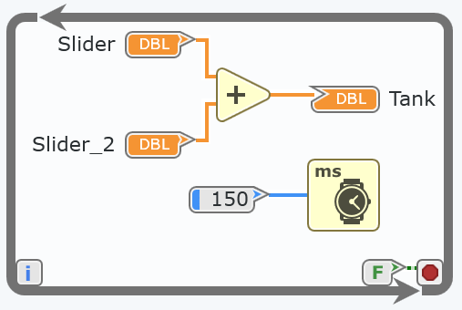

This browser is reporting compatibility with older browser technologies that may perform poorly if it all.
NI
G on the Web
Engineering Views
IoT
Vireo
What's Next?
Web VI
LabVIEW on the Web
HTML5 Engineering Widgets
Portable, Embeddable, Standards Based
TODO Image of "LabVIEW to the Web"

Engineering Views
I/O for IoT
Plays well with others
Vireo Runtime
Compact, Portable, Open Source
We're just getting started